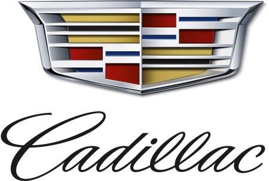

홈 > 브랜드 매거진 > 캐딜락
캐딜락
캐딜락는 자동차 산업 분야의 브랜드입니다.
산업 분야 모빌리티 · 공개 등급 자료 기반 · 브랜드 평가 4.3 ★

한눈에 보는 브랜드
캐딜락는 자동차 산업 분야의 브랜드입니다.
시작과 성장
헨리 릴런드가 1902년에 설립한 미국의 명품 자동차 브랜드로 세단, 크로스오버, 쿠페, SUV 등을 제조 · 판매함.
제품과 서비스
Cadillac 항목의 제품·서비스 정보는 일반 상품 카탈로그가 아니라 브랜드 아이덴티티 산출물 기준으로 정리됩니다. 전체 에셋 25개, 이미지 20개, 영상 5개, 로컬 저장 이미지 20개를 통해 정지 이미지와 영상 에셋의 비중을 확인할 수 있고, 이는 로고 적용, 컬러 시스템, 캠페인 톤, 패키지 또는 공간 적용 가능성을 검토하는 출발점이 됩니다.
타임라인
BI/CI 변천사
함께 읽을 브랜드
Ti
Time
브랜드·비즈니스 · 편집 검수TimeTime는 2023년에 기록된 Designed by For the People 계열의 브랜드 아이덴티티 사례입니다. For The People가 아이덴티티 작업의 디...
 모빌리티 · 편집 검수Repsol
모빌리티 · 편집 검수RepsolRepsol는 2025년에 기록된 Energy 계열의 브랜드 아이덴티티 사례입니다. Saffron가 아이덴티티 작업의 디자이너로 기록되어 있습니다. 로고, 타입, 컬...
Mo
Moth
식음료 · 편집 검수MothMoth는 2021년에 기록된 Beverage 계열의 브랜드 아이덴티티 사례입니다. Pentagram, Neverbland가 아이덴티티 작업의 디자이너로 기록되어 있...
YO
YO!
브랜드·비즈니스 · 편집 검수YO!YO!는 2016년에 기록된 Designed by Paul Belford Ltd 계열의 브랜드 아이덴티티 사례입니다. Paul Belford Ltd가 아이덴티티 작업...
 모빌리티 · 편집 검수AGIP
모빌리티 · 편집 검수AGIPAGIP는 1971년에 기록된 Energy 계열의 브랜드 아이덴티티 사례입니다. Bob Noorda, Unimark International가 아이덴티티 작업의 디자...
 모빌리티 · 편집 검수Shell
모빌리티 · 편집 검수ShellShell는 1971년에 기록된 Energy 계열의 브랜드 아이덴티티 사례입니다. Raymond Loewy가 아이덴티티 작업의 디자이너로 기록되어 있습니다. 로고,...
 모빌리티 · 편집 검수TEPCO
모빌리티 · 편집 검수TEPCOTEPCO는 1987년에 기록된 Energy 계열의 브랜드 아이덴티티 사례입니다. Kazumasa Nagai, Nippon Design Center가 아이덴티티 작업...
Lo
London Electricity Board
모빌리티 · 편집 검수London Electricity BoardLondon Electricity Board는 1971년에 기록된 Energy 계열의 브랜드 아이덴티티 사례입니다. HDA International, FHK Henr...